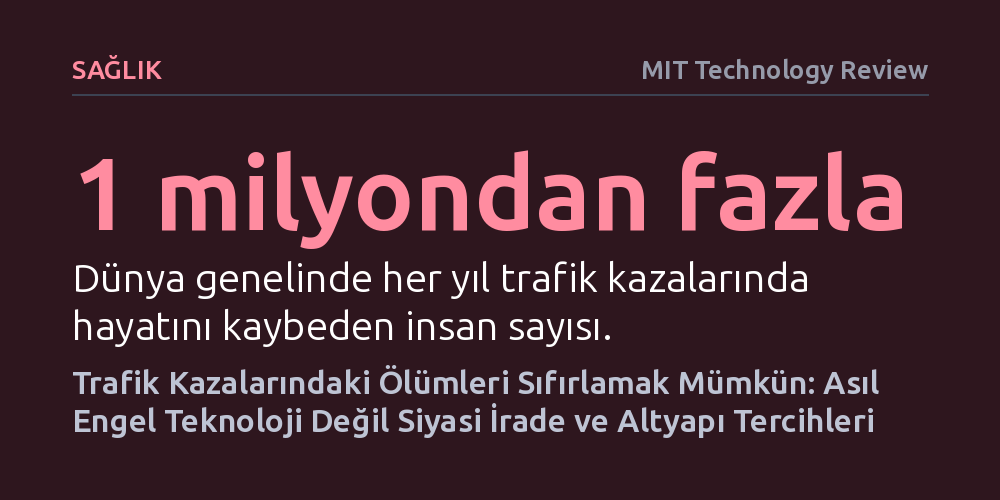

SAGLIK · MIT Technology Review · 2026-10-22
Trafik ölümleri kaçınılmaz bir kader değil; hız sınırlarının düşürülmesi ve kavşakların yayalar lehine yeniden tasarlanması can kayıplarını sıfırlayabiliyor. Bu dönüşümün önündeki asıl engel teknik yetersizlikler değil, otoparklardan vazgeçmeyi ve gerekli bütçeyi sağlamayı gerektiren siyasi irade eksikliğidir.
Trafik kazalarını sürücü hatalarına bağlı kaçınılmaz bir kader olarak görmek yerine, sokak ve kavşak tasarımlarıyla tamamen önlenebilir bir altyapı ve kamu sağlığı sorunu olarak kavramayı sağlar.

Dünya genelinde her yıl 1 milyondan fazla insan trafik kazalarında yaşamını yitiriyor ve bu kazalar çocuklar ile genç yetişkinler arasındaki birinci ölüm nedeni olmayı sürdürüyor. Yalnızca Amerika Birleşik Devletleri'nde her gün yaklaşık 100 kişi bu şekilde can veriyor; üstelik bu ölümlerin büyük bir kısmı otoyollarda değil, kırsal yollarda ve şehir içi sokaklarda gerçekleşiyor. Toplumun bu devasa can kaybını neredeyse doğal bir afet veya modern yaşamın kaçınılmaz bir bedeli gibi kanıksamış olması ise sorunun en trajik boyutunu oluşturuyor.
Vision Zero Network adlı sivil toplum kuruluşunun yöneticisi Leah Shahum, tam da bu çelişkiye parmak basıyor: "Trafik ölümleri önlenebilir ölüm nedenlerinin başında geliyor, ancak biz buna sanki kaçınılmazmış gibi yaklaşıyoruz." Bir kaza meydana geldiğinde fatura genellikle aşırı hız yapan ya da dikkati dağılan sürücüye kesiliyor. Oysa sürücülerin hata yaptığı doğru olsa da onları bu hatalara açık hale getiren temel unsur altyapı yetersizlikleri. Yayaların ve bisikletlilerin fark edilmediği kavşaklar, dikkati dağıtan ekranlarla donatılmış araçlar ve güvenlik yerine yalnızca araç hızını önceleyerek inşa edilmiş yollar kazaları ölümcül kılıyor.
Geçtiğimiz yüzyıl boyunca dünya genelinde trafiğe çıkan araç sayısı katlanarak arttı ve buna paralel olarak toplam trafik ölümlerinde de ciddi bir artış yaşandı. Amerika Birleşik Devletleri verilerine bakıldığında, 1930'larda 100 bin kişide 30,8 ölümle tepe noktasına ulaşan oranın araç güvenliği teknolojileri sayesinde zamanla gerilediği görülüyor. Ancak son on yıllık dönemde bu olumlu gidişat tersine dönmeye başladı.
Özellikle yaya ölümlerinde kaydedilen endişe verici tırmanış, mevcut güvenlik paradigmasının sınırlarına ulaştığını gösteriyor. Otomobilleri hava yastıkları ve darbe emici gövdelerle donatarak yalnızca araç içindekileri korumaya odaklanan yaklaşım, caddeleri yürüyerek veya bisikletle kullanan savunmasız insanları korumakta yetersiz kalıyor. Bu tablo karşısında yerel topluluklar, güvenliğin sadece bireysel dikkatle değil, doğrudan doğruya kamu politikaları ve yol tasarımlarıyla sağlanabileceği gerçeğini yeniden fark ediyor.
Trafik ölümlerini tamamen sıfırlamanın bir ütopya olmadığını gösteren somut başarı hikâyeleri mevcut. New Jersey eyaletindeki Hoboken kenti, 2017 yılından bu yana tek bir trafik ölümü dahi yaşamayarak çarpıcı bir rekora imza attı. Kentin bu başarıya ulaşması bir dizi tutarlı adıma dayanıyor: Toplu taşımaya ayrılan bütçe artırıldı, kavşaklarda kaldırımlar yola doğru genişletilerek yaya geçiş mesafeleri kısaltıldı ve kaza riski taşıyan noktalar kameralarla tespit edilerek hızla yeniden tasarlandı.
Elbette yaklaşık 60 bin nüfuslu ve New York City'nin hemen karşısında yer alan Hoboken, toplu taşımaya son derece elverişli, kompakt bir yerleşim yeri. Buradaki başarının otomobil odaklı dev metropollere uygulanamayacağı düşünülebilir. Ancak Kanada'nın Edmonton kenti bu varsayımı boşa çıkarıyor. Yaklaşık 1 milyon nüfusa sahip, geniş bir coğrafyaya yayılan ve araba kullanımının son derece baskın olduğu Edmonton, 2015 ile 2020 yılları arasında hız sınırlarını kademeli olarak düşürerek ve yaya geçitlerindeki sinyalizasyonu iyileştirerek ölümlü kazaları yüzde 63, ağır yaralanmaları ise yüzde 40 oranında azaltmayı başardı.
Mevcut deneyimler, kavşakları nasıl daraltacağımızı, sinyalizasyonu yayaları koruyacak biçimde nasıl yapılandıracağımızı ve hız limitlerini nasıl yöneteceğimizi teknik olarak çok iyi bildiğimizi gösteriyor. Hayat kurtaran bu müdahalelerin önündeki en büyük engel mühendislik ya da teknoloji eksikliği değil; bu adımları hayata geçirecek finansmanı ve siyasi kararlılığı ortaya koyamamak.
Bir kavşağı yayalar için güvenli kılmak çoğu zaman kaldırım uzantıları yapmayı ve bunun için de araç park yerlerinden feragat etmeyi gerektiriyor. Ancak henüz ölümlü bir kazanın yaşanmadığı bir noktada park alanlarını kaldırmaya çalışmak yerel halkın ve esnafın sert tepkisiyle karşılaşabiliyor. Yetkililerin de ifade ettiği gibi, henüz gerçekleşmemiş kazaları önlemeye yönelik altyapı iyileştirmeleri yapmak adeta görünmez bir riske karşı sigorta poliçesi satmaya benziyor ve kaza yaşanmadıkça bu adımların gerekliliğini topluma kabul ettirmek kolay olmuyor. Dolayısıyla trafik ölümlerini bitirmek, kaza olmasını beklemek yerine sokakları otomobil hızına değil insan hayatına göre yeniden düzenleme cesaretini gösterebilmekten geçiyor.